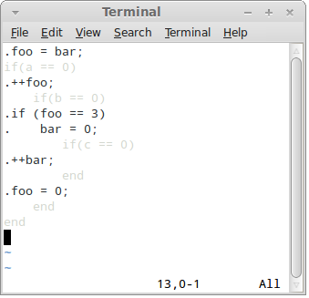
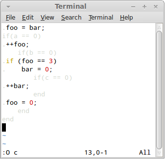

Ruby:
$ ribosome.rb foo.rb arg1 arg2 arg3
However, to distinguish native programs from Ribosome scripts it is customary to add .dna extension to the script file. So the command line more often looks like this:
Python:
$ ribosome.py foo.py.dna arg1 arg2 arg3
Simple output
Lines starting with a dot (.) are copied directly to the output:
JavaScript:
for(var i=0; i<2; i++) {
.Test!
}
Ruby:
for i in 1..2 .Test! end
Pyhon:
for i in range(2):
.Test!
All the above scripts produce the same output:
Test! Test!
Lines starting with a dot can be terminated by $ sign. The sign is optional, however, if there's whitespace at the end of the line it is recommended to finish the line with $ to prevent invisible whitespace getting into the output files.
All languages:
.Hello! $
Redirecting output
By default, the output is directed to stdout. Therefore, it can be re-directed using classic UNIX pipes. For example:
Ruby:
$ ribosome.rb test.rb.dna > test.txt
You can also redirect the output to a specific destination directly from the DNA file. Use '/!output' command to accomplish the task:
All languages:
. /!output("test.txt")
. Test!
Note that Ribosome commands may appear only in lines starting with a dot, may be preceded with arbitrary amout of whitespace (which will be ignored) and start with slash and exclamation mark. The arguments of the command are standard expressions in the control language:
Python:
name = "foo" ./!output(name + ".txt")
To redirect the output back to the console use '/!stdout' command:
All languages:
./!output("test.txt")
.This line goes to the file!
./!stdout()
.This line goes to the console!
Finally, you can append new text to existing file using '/!append' command:
All languages:
./!output("test.txt")
.Stuff
./!stdout()
./!append("test.txt")
.More stuff
Embedded expressions
Often, you need to insert a computed value into the output. You can do so by embedding control language expressions into dot-style lines:
JavaScript:
var name = "Fred";
.Hello, @{name}!
With standard, non-Ribosome-aware functions, the return value is converted into a string and written to the output.
If the embedded expression produces Ribosome output itself, the text is inserted into the output file instead of the return value:
JavaScript:
function greet(name){
.printf ("Hello, @{name}!\n");
}
.int main () {
. @{greet("Alice")}
. @{greet("Bob")}
. return 0;
.}
Ruby:
def greet(name)
.printf ("Hello, @{name}!\n");
end
.int main () {
. @{greet("Alice")}
. @{greet("Bob")}
. return 0;
.}
Python:
def greet(name):
.printf ("Hello, @{name}!\n");
.int main () {
. @{greet("Alice")}
. @{greet("Bob")}
. return 0;
.}
Line concatenation
Typically, each dot-style line is translated into a separate line in the output file. Sometimes, however, you may want to generate complex stuff into a single line of the output file. In such case new line can be appended directly to the previous line. Use /+ operator to achieve the behaviour:
JavaScript:
.Hello $
var students = ["Alice", "Bob", "Carol"];
students.forEach(function(item){
. /+@{item} $
});
./+!
Ruby:
.Hello $
for i in ["Alice", "Bob", "Carol"]
. /+@{i} $
end
./+!
Python:
.Hello $
for i in ["Alice", "Bob", "Carol"]:
./+@{i} $
./+!
Note that all the whitespace preceding /+ operator is silently ignored:
Hello Alice Bob Carol !
Separators
A common task with code generation is to insert separators between the items of a list. Ribosome provides /!separate command to help with the task. The command must precede a loop (for, while or similar) and takes a single parameter, the text to use as a separator:
JavaScript:
.Hello $
var students = ["Alice", "Bob", "Carol"];
./!separate(", ")
for(var i=0; i<students.length; i++){
. /+@{students[i]}
}
./+!
Ruby:
.Hello $
./!separate(", ")
for i in ["Alice", "Bob", "Carol"]
. /+@{i}
end
./+!
Python:
.Hello $
./!separate(", ")
for i in ["Alice", "Bob", "Carol"]:
. /+@{i}
./+!
Note that the separator doesn't appear after the last element of the list:
Hello Alice, Bob, Carol!
Strict embedded expressions
You may have noticed that any whitespace generated by the embedded expressions is trimmed. To keep the whitespace intact, use &{} operator instead of @{}:
Python:
s = " 2 "
.1@{s}3
.1&{s}3
The script above produces following output:
123 1 2 3
Nested embedded expressions
Producing output that is a DNA file itself can be tricky. The main problem is that a lot of escape sequences would have to be used. To solve that, Ribosome provides a tool called nested embedded expressions.
Nested embedded expressions are written @N{} or &N{}, where N is a digit from 1 to 9. The number is called the level of the nested expression. During the compilation nested expressions of first level are replaced by ordinary embedded expressions. Nested expressions of second level are replaced by nested expressions of first level, nested expressions of third level are replaced by nested expressions of second level and so on.
@9{x} => @8{x} => @7{x} => ... => @2{x} => @1{x} => @{x}
Consider, for exmaple, this script:
Ruby:
.name = "Alice"
..Hello, @1{name}!
It compiles into this script:
Ruby:
name = "Alice"
.Hello, @{name}!
Which, in turn, is compiled into:
Hello, Alice!
Escape sequences
In the rare cases when you need to generate a sequence of characters that accidentally matches a Ribosome operator, you can use one of the predefined escape sequences. For example:
All languages:
.123@{at}{456
Translates into:
123@{456
Full list of escape sequences:
@{at} => @
@{amp} => &
@{slash} => /
Advanced layout management
Consider the following script:
JavaScipt:
function colours() {
. White
. Black
. Ultramarine
. Red
. Green
. Blue
}
function shapes() {
. Triangle
. Circle
}
.Colours: @{colours()} Shapes: @{shapes()}
.
.That's all, folks!
It produces the following output:
Colours: White Shapes: Triangle
Black Circle
Ultramarine
Red
Green
Blue
That's all, folks!
To undestand how Ribosome layouts the code, it is necessary to keep in mind that it's not characters that are placed on a line, but rather rectangular blocks of text.
Every literal string is considered to be a block of text (consisting of a single line) and so is every embedded expression. However, given that embedded expressions can generate multiple lines they are treated as multi-line blocks of text.
The blocks are aligned to the top of the line:
Thus, the line:
.Colours: @{colours()} Shapes: @{shapes()}
Is laid out like this:

Every next line is laid out directly bellow the longest block on the previous line:

Note that @-style embedded expressions trim the whitespace from the left, right, top and bottom of the block. Therefore, the block produced by @{colours} expression looks like this:
Also note that whitespace is trimmed from the block as a whole, not from each individual line. That way, the block alway remains rectangular in shape:

This feature is extremely important to produce properly aligned code. Consider this example:
JavaScript:
function greet(name) {
. printf ("Hello, @{name}!\n");
}
.@{greet("Alice")}
.if (is_bob_present) {
. @{greet("Bob")}
.}
The script above produces following output:
printf ("Hello, Alice!\n");
if (is_bob_present) {
printf ("Hello, Bob!\n");
}
Note how the greeting is properly aligned in both cases. What happens under the hood is that the whitespace from line 2 of the script is trimmed by @{} operator, while the whitespace on line 7 is treated as a text literal (i.e. as one-line text block) and is appended to the line before the greeting to Bob.
Aligning text
Operator /= aligns a line with the previous line.All languages:
. Hello, ./=world!
The above code yields the following output:
Hello,
world!
WARNING: This operator severely hurts the readability of the DNA script and thus it should be avoided. There are some specific use cases though where proper indentation of the generated code cannot be achieved by other means. Specifically, if a block of code is fetched from an external source, e.g. from an XML file, there's no way to know how it is indented. /= operator can be then used to align subsequent code with this external block of code.
Generating tabs
Ribosome doesn't allow for tabs in the input, however, when generating output it can, on demand, replace as much of the leading whitespace as possible by tabs. To switch this functionality on use /!tabsize command, providing desired size of the tab as a parameter:
All languages:
./!tabsize(4)
.for (i = 0; i != 10; ++i)
. printf("Hi!\n");
.}
In the output, leading four spaces in the line 3 will be replaced by a tab.
Set tabsize to zero to switch the generation of tabs off.
Importing DNA files
In case of need you can import a DNA file using /!include command. The behaviour is the same as if the contents of the imported file was copied to the location in question in the importing file:
All languages:
./!include("foo.dna")
Distributing the code generator
Ribosome is a compiler-compiler. It first compiles DNA file into a straight JavaScript, Ruby or Python program (called RNA script) which is then executed to produce the generated code. The intermediate step is fully hidden from the user.
The above works well for ad-hoc and throw-away code generation, however, if you want to distribute the code generator to the users it is better to generate the RNA script first and distribute that instead of the DNA script - that way there's no dependency on Ribosome itself (the user will do with only node.js, Ruby and/or Python installed):
Ruby:
ribosome.rb --rna foo.rb.dna > foo.rb
Also note that if your DNA script is composed of multiple DNA files (using /!include command) only a single RNA script is generated, making the distribution to the users easier.
Syntax highlighting in Vim
Given that DNA files contain two overlapping indentations, syntax highlighting is crucial for good code readability.
To install Ribosome syntax highlighting for vim, download the configuration file here:
Copy it to the vim's syntax directory. For example:sudo cp ribosome.vim /usr/share/vim/vim73/syntax
Afterwards, open vim's filetype file:
sudo vim /usr/share/vim/vim73/filetype.vim
And add the following line to it:
au BufNewFile,BufRead *.dna setf ribosome
Now you are ready to open a DNA file in vim:

What you see is so called "common view" where control language (Ruby) and generated language (C) are highlighted in such a way as to allow inspection of both.
When in other views, you can switch to common view using F2 key.
Press F3 key to switch to the "Ruby view":

Here the control language has its native syntax colouring, while generated code is shaded as not to distract from inspecting the control language.
Press F4 key to switch to the "Output view":
In this view the control language is shaded and output language is fully visible.
However, vim does not know what syntax highlighting to use for the generated language. You can instruct it to use particular syntax highlighting algorithm using O (capital letter O) command. Pass the name of the language as an argument:
